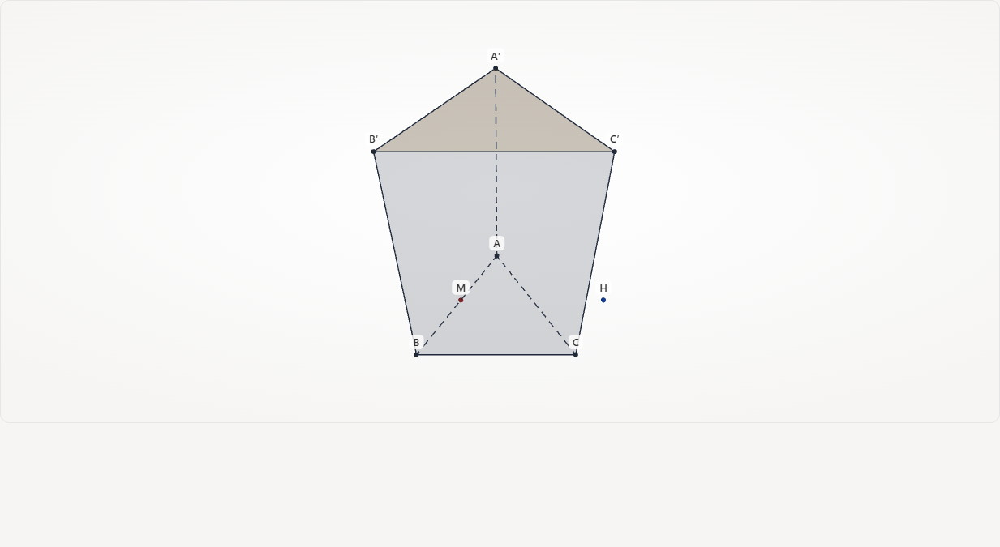
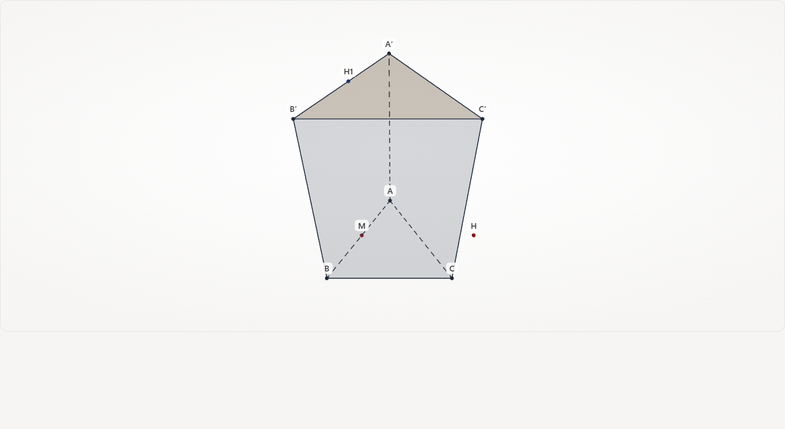
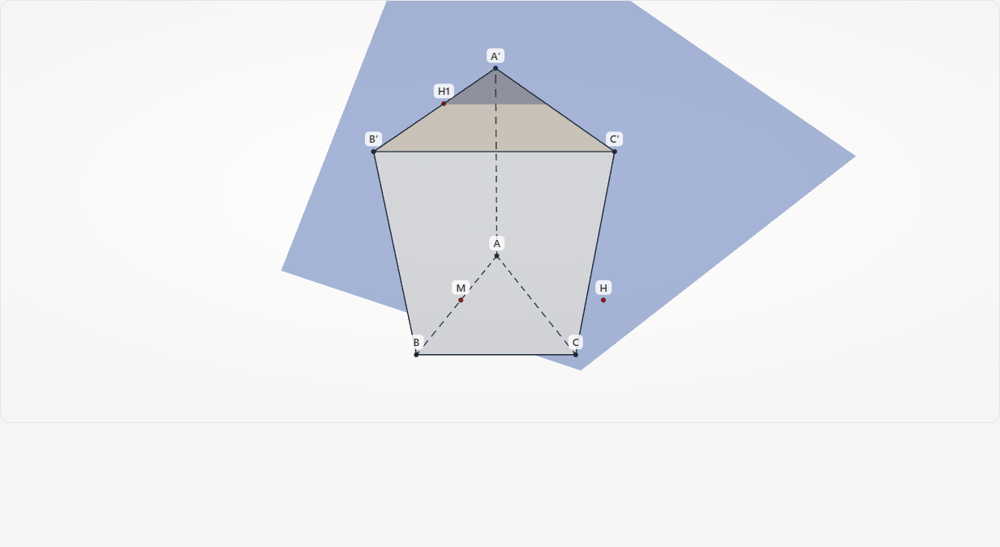
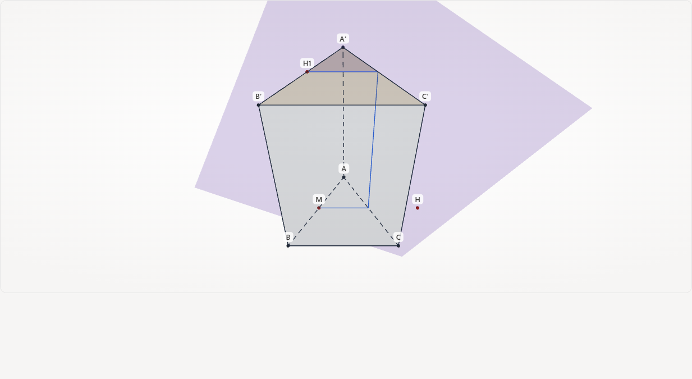
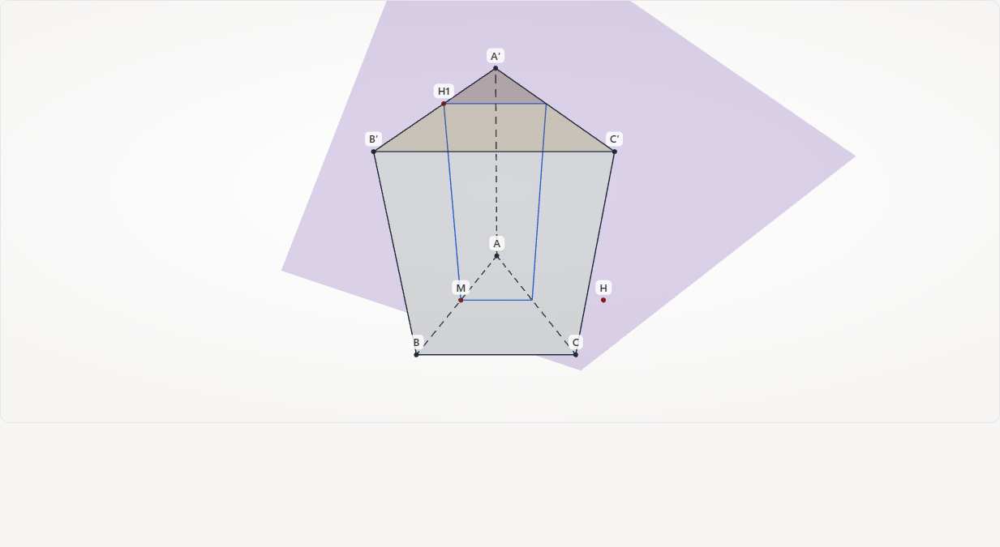
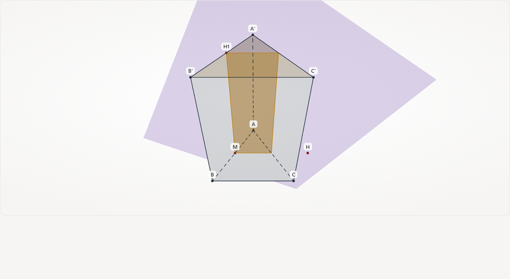

Bước 6/14 · trace 5–6 Dựng M là trung điểm của đoạn AB. · Lấy vectơ BC.

Bước 7/14 · trace 7–8 Qua M dựng điểm H sao cho vectơ MH bằng vectơ BC. · Lấy vectơ BB′.

Bước 8/14 · trace 9 Qua M dựng điểm H1 sao cho vectơ MH1 bằng vectơ BB′.

Bước 9/14 · trace 10 Dựng (P).Bước 10/14 · trace 11 Trên mặt ABC, nối giao điểm thuộc cạnh AB với giao điểm thuộc cạnh AC.Bước 11/14 · trace 12 Trên mặt CAA′C′, nối giao điểm thuộc cạnh AC với giao điểm thuộc cạnh A′C′.

Bước 12/14 · trace 13 Trên mặt A′B′C′, nối giao điểm thuộc cạnh A′C′ với giao điểm thuộc cạnh A′B′.

Bước 13/14 · trace 14 Trên mặt ABB′A′, nối giao điểm thuộc cạnh A′B′ với giao điểm thuộc cạnh AB.

Bước 14/14 · trace 15–16 Thiết diện khép lại thành tứ giác: (P) cắt lăng trụ đứng ABC.A′B′C′. · Diện tích thiết diện bằng 3.